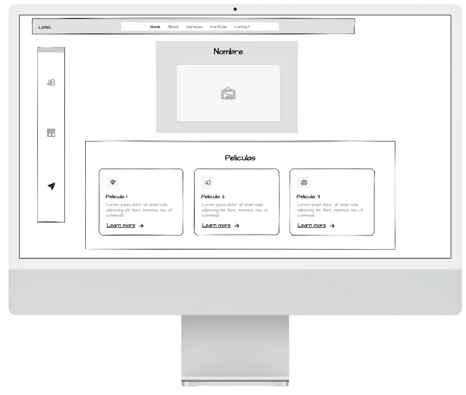
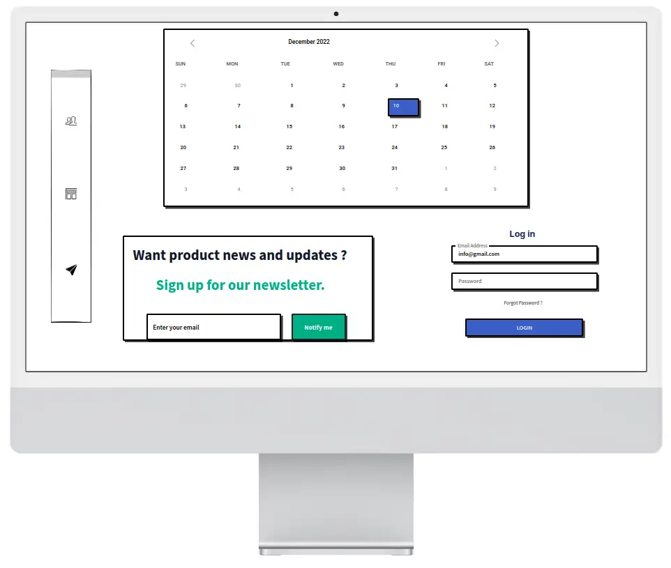
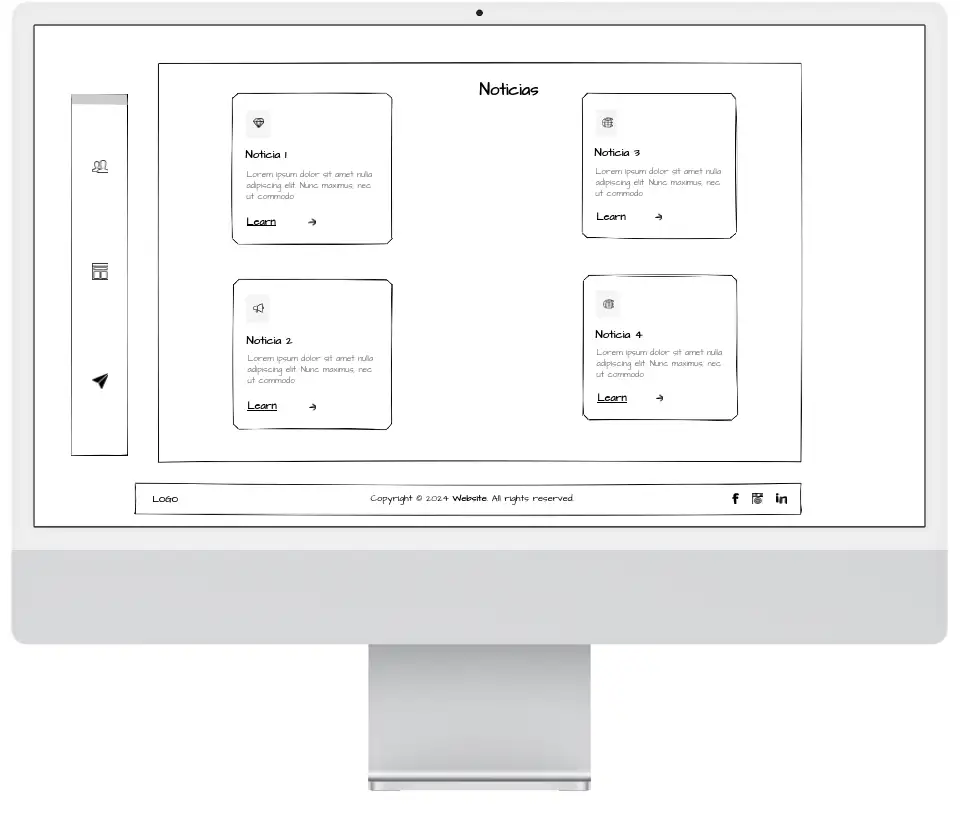

Descripción del Proyecto
Este proyecto es parte de la asignatura Diseño de Interfaces Web. A lo largo del curso, estamos modificando y mejorando la página web según los nuevos conceptos que vamos aprendiendo. El objetivo es crear una interfaz atractiva, funcional y responsiva que refleje nuestros conocimientos adquiridos.
Mockup de la Página Web
Antes de comenzar con el desarrollo, creé un mockup para visualizar cómo sería la página web. Aquí está el diseño inicial:
Mockup ordenador
  Explicación de los criterios escogidos
-
Gama de colores:
Los colores seleccionados son tonos burdeos y rojos, que evocan la atmósfera de los cines tradicionales. Estos tonos están inspirados en las butacas y alfombras características de los cines clásicos, representando nostalgia y tradición combinadas con un diseño moderno.
Además, el fondo de la página utiliza un degradado que pasa de un color claro a uno oscuro, simbolizando la experiencia de entrar al cine. Al principio, la sala está iluminada, pero al iniciar la película, el ambiente se oscurece para centrar la atención en la pantalla. Este detalle añade un toque visual que transmite la transición de la iluminación en una sala de cine.
-
Logo:
El logo consiste en una claqueta, un símbolo del cine, diseñada con los colores representativos de la Comunidad Valenciana. Además, incluye una "V" como referencia al valenciano, con un estilo redondeado que transmite modernidad y actualización, equilibrando tradición y contemporaneidad.
-
Tipografía:
Para los títulos y los enlaces he seleccionado Bebas Neue, una tipografía con diseño limpio, elegante y geométrico que captura la esencia cinematográfica. Su uso frecuente en carteles de películas, especialmente en géneros como acción o drama, añade un toque visual impactante, ideal para captar la atención.
En los párrafos, he optado por Roboto, una tipografía moderna y altamente legible. Su diseño minimalista y contemporáneo complementa a Bebas Neue y asegura comodidad al leer bloques de texto. Además, su versatilidad y uso frecuente en aplicaciones digitales reflejan la evolución moderna del cine en plataformas digitales.
-
Imágenes
En cuanto a las imágenes, he utilizado el formato webp porque ofrece una excelente compresión sin pérdida significativa de calidad, lo que permite tiempos de carga más rápidos y una mejor experiencia de usuario. Además, he optado por una resolución máxima de 1000 píxeles de ancho, ya que es un ancho común para imágenes de contenido(entre 1000-800), asegurando que se vean nítidas y detalladas en la mayoría de los dispositivos sin afectar negativamente el rendimiento de la página.
Puedes volver a la página principal haciendo clic en el siguiente enlace:
Volver a la Página Principal